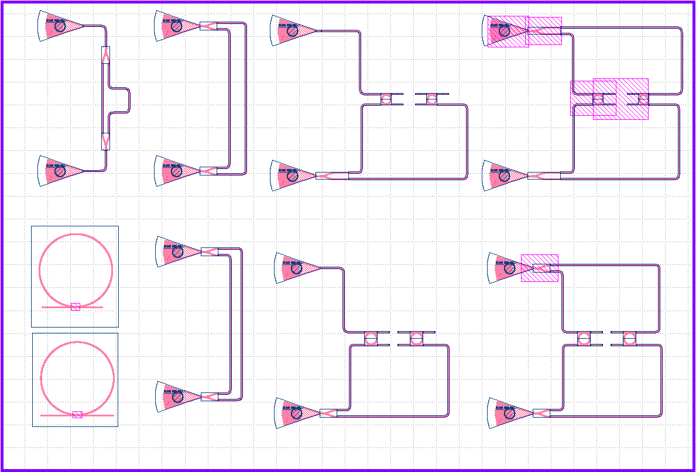

As part of the Phot1x UBCx course, I have installed the SiEPIC PDK into KLayout. Man. For the past 2 tapeouts, I did everything in KLayout mostly manually when it comes to alignment and such. I would export the GDSII files from Tidy3D, then import them to the layout. Since we have fabricated with Applied Nanotools, I have been using their PDK specifically for their grating coupler so we could get some experimental data. This SiEPIC PDK however takes it to another level. So many custom scripts for pin snapping, waveguide to path, many PCells, a one-button layout verification tool, the list goes on. Now, this is perfect within the confines of the course as you are expected to use their components to make some Mach-Zehnder Interferometers (MZIs). It gets dicey when you try to import custom geometry not defined in the CML, as you need to get around the verification step through adding a DevRec box and making a cell out of your geometry. Trying to put in a custom ring close to a path defined waveguide results in an overlap error (the DevRec boxes overlapping), which as far as I tried, for many hours, can't be cicrumvented. So, unless my coupling gap was about 400nm, then I couldn't have my custom geometry measured. I realized, then, that this PDK (as is) was most certainly made for instruction, which I think it does very effectively. Knowing what is possible in KLayout now, I aim to create some custom scripts of my own.